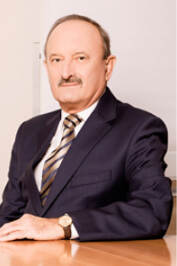

Горошко Микола Петрович
Історія
Історію Полтавського (Дніпровського) гірничо-збагачувального комбінату умовно можна поділити на декілька етапів, кожен з яких був важливим, напруженим, на кожному вирішувались значні задачі.
І-й етап – підготовчий, охоплює період з 1954 по 1961 роки. На протязі семи років вчені, узагальнивши результати багаторічних досліджень, зробили висновки про доцільність промислової розробки родовищ Кременчуцької магнітної аномалії. На основі висновків було прийнято рішення про будівництво Дніпровського гірничо-збагачувального комбінату. Міністерством чорної металургії СРСР були затверджені техніко-економічні розрахунки по розробці родовищ, а Держпланом УРСР прийнято протокольне рішення про проектування розробки і збагачення магнетитових залізистих кварцитів на основі руд Горішньо-Плавнівського родовища.
Постановою РМ УРСР № 14980 від 08.09.1960 року було затверджено «Короткий зміст проектного завдання», а в листопаді того ж року прийнято спільну Постанову ЦК КПУ та РМ УРСР № 1923 «Про підготовку будівництва Дніпровського гірничо-збагачувального комбінату, Кременчуцького нафтопереробного заводу та інших об’єктів Полтавського економічно-адміністративного району».
14.12.1960 року постановою Полтавського Раднаргоспу для будівництва Дніпровського ГЗК був організований новий трест «Кременчукрудбуд», створена дирекція нового комбінату. Протягом зими та весни 1961 року здійснювались підготовчі роботи, завозилась техніка, механізми, обладнання та матеріали, вирішувались побутові проблеми влаштованих на будівництво працівників. 15 липня – початок розкривних робіт в кар’єрі.
З 1962 року почався 2-й етап історії ГЗК – будівництво першої черги, що закінчився в 1970 році введенням в експлуатацію першої черги Дніпровського гірничо-збагачувального комбінату. 16.05.1963 року на Камиш-Бурунський ГЗК була відправлена перша партія сирої руди для промислової проби. Протягом дев’яти років був підготовлений для експлуатації кар’єр, дробильно-збагачувальний комплекс з потужною допоміжною базою, а в новозбудованому для гірників місті Комсомольську – житловий масив та об’єкти соцкультпобуту. Всі вісім секцій на збагачувальній фабриці були введені в експлуатацію протягом року.
3-й етап охоплює період з 1971 по 1992 роки, протягом яких суттєво здійснено розширення та реконструкцію кар’єру, будівництво другої дробильно-збагачувальної фабрики, корпусів сухої магнітної сепарації, фабрик збагачення, здійснено розширення хвостового господарства й оборотного водо забезпечення. Реконструкцію й будівництво зовнішнього та внутрішньо фабричного залізничного транспорту, будівництво річкового порту для відвантаження окатків споживачам водним шляхом, а також будівництво об’єктів енергозбереження комбінату, ремонтного й господарського значення.
Будівництво двох фабрик огрудкування (№1 та №2) проектною потужністю по 6 млн. тон окатків на рік кожна, виконано по окремим технічним проектам, затвердженим МЧМ СРСР наказами №567 від 04.08.1975 та №1138 від 30.12.1977 років. В квітні 1977 року була введена в експлуатацію 1-ша, а в лютому 1978 року – 2-га технологічні лінії по виробництву окатків фабрики огрудкування № 1 (ЦВО-1). В березні 1978 року повністю була введена в експлуатацію фабрика огрудкування № 1. Основне обладнання по схемі «решітка – трубчата піч – кільцевий охолоджувач» придбано в американської фірми «Алліс Чалмерс». Протягом 1980 року були введені в експлуатацію 3-тя та 4-та технологічні лінії по виробництву окатків фабрики огрудкування № 2 (ЦВО-2), та введена в експлуатацію сама фабрика.
В зв’язку з набуттям Україною незалежності, переходом промисловості на ринкові відносини, початком приватизації, в 1992 році почався 4-й етап історії Полтавського ГЗК. В 1992 році комбінат видав завдання інституту «Укргіпроруда» на виконання проекту відпрацювання родовищ Полтавського ГЗК. При виконанні проекту були уточнення: порядок та напрямок розвитку гірничих робіт до 2010 року і на перспективу, обсяги видобутку руди та розкривних порід, порядок розкриття та відпрацювання нижніх горизонтів, а також нових ділянок кар’єру.
Стратегія розвитку
ПрАТ «Полтавський гірничо-збагачувальний комбінат на 2019 рік.
З метою отримання конкурентних переваг ПрАТ «Полтавський ГЗК» на зовнішньому та внутрішньому ринках залізорудної сировини , поліпшення матеріального становища та соціальних умов працівників комбінату, керівництво комбінату ставить перед колективом наступні завдання:
- Забезпечити конкурентоспроможність продукції комбінату на світовому ринку залізорудної сировини за рахунок впровадження сучасних енергозберігаючих технологій, зниження витрат на виробництво, впровадження сучасного економічного, високопродуктивного обладнання, поліпшення металургійних властивостей залізорудних окатків.
- Виробити 10,600 млн.тонн залізорудних окатків із руди ПГЗК та ЄГЗК за умови забезпечення промислової безпеки, охорони здоров'я працівників комбінату та мінімального негативного впливу на навколишнє середовище
- Виконати в рамках діючих контрактів стовідсоткове відвантаження залізорудних окатків, що відповідають вимогам замовників.
- Виробити 9,880 млн.тонн окатків з вмістом Fe 65%.
- Продовжувати вдосконалення системи управління якістю згідно з вимогами міжнародного стандарту ДСТУ ISO 9001: 2015, що забезпечить подальше просування продукції комбінату на світовому ринку, зміцнить довіру споживачів.
Наглядова рада
Наглядова рада ПрАТ «Полтавський ГЗК»:
Голова Наглядової ради
Перший заступник Голови Наглядової ради
Член Наглядової ради
Член Наглядової ради
Член Наглядової ради
Горошко Микола Петрович
Бадагов Володимир Федорович
Білоус Володимир Миколайович
Красуля Олександр Сергійович
Мо Крістофер

Бадагов Володимир Федорович

Білоус Володимир Миколайович
Красуля Олександр Сергійович
Мо Крістофер
Правління
Правління ПрАТ «Полтавський ГЗК»:
Голова Правління
Перший заступник Голови Правління
Заступник Голови Правління з фінансових питань
Заступник Голови Правління з технічних питань
Заступник Голови Правління з комерційних питань
Член Правління, Головний бухгалтер
Лотоус Віктор Вікторович
Іванов Володимир Станіславович
Кладієв Микола Анатолійович
Кіяшко Микола Юрійович
Спатар Дмитро Миколайович
Горошко Олег Миколайович
Лотоус Віктор Вікторович
Іванов Дмитро Станіславович
Кладієв Микола Анатолійович
Спатар Дмитро Миколайович
Горошко Олег Миколайович
Кіяшко Микола Юрійович